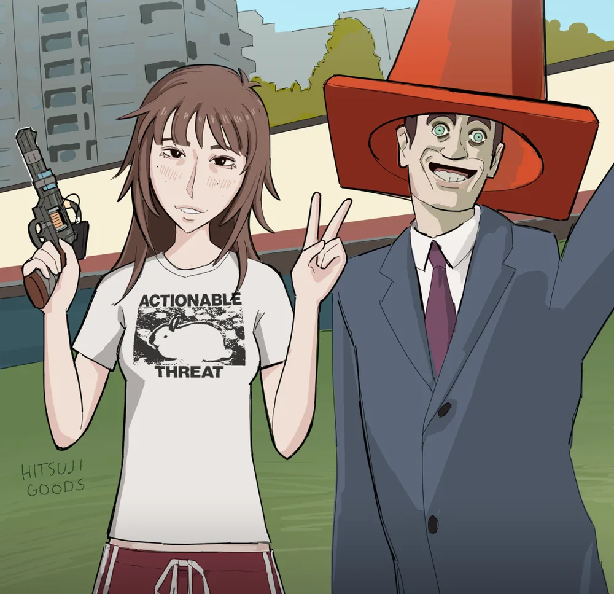
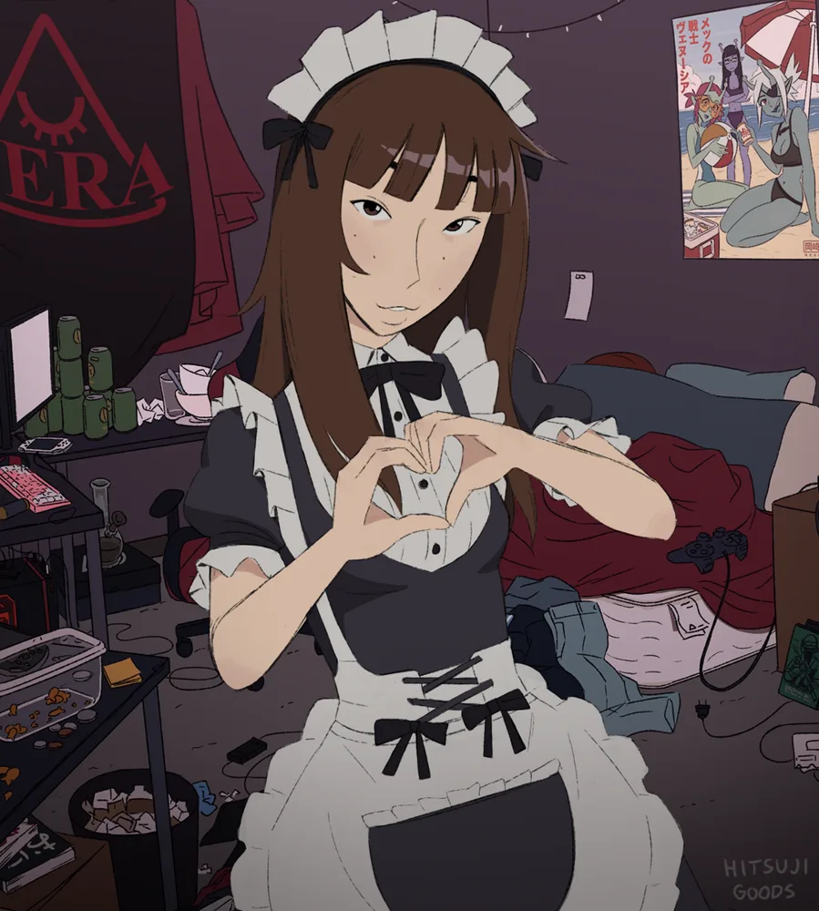

inventory:
empty pockets
☕ cold coffee
🗝 reflog key
🛡 --force-with-lease
sanity
the lobby of main

you stand on branch main. it is 4:58pm on a friday.
a sign reads: "merge feature/everything before the weekend."
somewhere below, the merge dragon stirs.
paths lead down to the stash cellar and east to the reflog crypt.
a door to the north hums with the sound of --force.
the stash cellar
hundreds of stashes line the shelves, dusty and unlabeled.
stash@{0}: "wip" stash@{1}: "wip" stash@{212}: "please"
on a shelf sits a mug of coffee from a stash popped in 2019.
it is cold. it is still coffee.
the reflog crypt
lost commits float here, whispering their hashes.
"a1b2c3d... we were reset... --hard..."
a ghostly commit offers you a key forged from head@{7}.
"take it. only the lost can open what is locked."
the hall of --force
you push open the door. it was a push --force.
three coworkers' commits vanish. you hear distant screaming in slack.
your sanity drops sharply. (coffee would help.)
the armory
a rack of flags gleams in the dark.
--no-verify (rusted) --amend (cursed) --force-with-lease (polished)
the polished one glows. it is the polite knife.
it will only overwrite what you expected to overwrite.
the rebase bridge
a narrow bridge made of 47 commits spans a chasm of conflicts.
each plank must be replayed one by one.
a sign: "only those who push safely may cross."
beyond, a locked iron gate. beyond that, the dragon.
the chasm
plank 23 has a conflict in package-lock.json.
you fall. you land in a pile of 11,000 changed lines.
git rebase --abort echoes from above. you are back where you started, but sadder.
the iron gate
you cross safely. the gate is engraved:
"i remember every commit. do you?"
there is a keyhole shaped like a reflog entry.
lair of the merge dragon
__====-_ _-====___
_--^^^#####// \\#####^^^--_
-^##########// ( ) \\##########^-
##########// |\^^/| \\###########
<<<<<<< head =======
the merge dragon has 47 conflicts. it breathes diff markers.
you are tired. you need your wits about you.
the node_modules pit
you peer into the hole. the hole peers back.
you fall. and fall. and fall.
is-odd → is-even → is-number → kind-of → is-buffer → ...
1,402 packages later you land on a pile of package-lock.json.
a small yellow goblin wearing a "js" badge scurries toward you.
it offers you a framework. it is the fourth one this week.
"consoom framework," it whispers. "get excited for next framework."
the javascript goblin
"hello," says the goblin. "i am javascript. i can do anything."
"can you add 0.1 and 0.2?" you ask.
"0.30000000000000004," it says proudly.
"is null an object?" "yes."
"is not-a-number equal to itself?" "no."
"why do you exist?" "a guy made me in ten days in 1995."
the goblin tries to run itself. nothing happens.
this dungeon has a content-security-policy.
the goblin dissolves into a harmless string.
victory

you resolve all 47 conflicts. ci turns green.
the dragon shrinks into a small, friendly tanuki.
✔ feature/everything merged into main
✔ 0 javascript was used in this quest
it is 5:01pm. you go home. we're so back. gem ending.
defeat

you accept "theirs" for all 47 conflicts.
production now serves a single file: todo.txt.
the dragon eats your weekend.
game over. it's over. fell for it again award.
reload the page to empty your pockets.
how does this work without javascript?
each room is a <section> shown only when it is the url :target. items are hidden checkboxes; clicking a <label> toggles one. body:has(#inv-key:checked) unlocks doors and fills your inventory. sanity is a pseudo-element whose width depends on which room you're in.